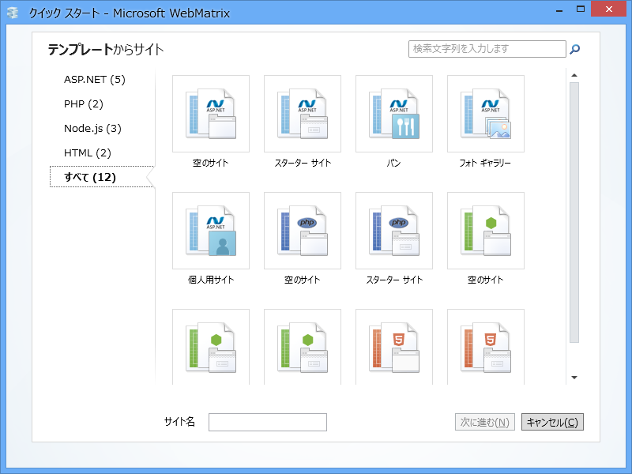

「WebMatrix 2」で利用できるテクノロジー
公開日：
（289日前に書かれた下書きに加筆・修正を加えてみたけど公開レベルに達せず。でも、公開してみるなど）

「WebMatrix 2」を起動してみました。新しい Web サイトを作成するには、“テンプレート”か“アプリ ギャラリー”を選択します。今回は“テンプレート”を選択してみました。

「WebMatrix 2」では大きく分けて4つのテクノロジーが利用可能です。
静的な Web ページ
動的な Web ページ（サーバーサイドで動的に出力）
内容が変わらない、“ペライチ”（コトノハ - “ペラいち”の意味が分かる あんまり使われない？）の Web ページを作るのならば HTML だけでもいいのですが、
- データベースと連携した検索ページなど、内容を動的に変更させたい
- テーマやサイドバー、ウィジェットなど、各 Web ページで共通の部分をひとまとめにしたい
といった場合には、サーバー側で動的に HTML を生成する仕組みがあると便利です。WebMatrix では、そのために以下の3つのテクノロジーがサポートされています。
ASP.NET
ASP.NET は、.NET 言語（C# や Visual Basic）を利用して HTML を出力できます。
ASP.NET にも色々あるのですけど、「WebMatrix 2」ではおもにその一部である“ASP.NET Web Page 2”が利用できます*1。
PHP
PHP: Hypertext Preprocessor は、HTML を出力するためのプログラミング言語です。ちまたにある Web アプリケーションの多くは PHP で記述されているので、知っておくと便利かも。
*1:ほかの技術――ASP.NET MVC など――も扱えないことはないですが、そのような複雑な技術を利用する場合はツールによるサポートが充実した「Visual Studio」を利用するべきでしょう